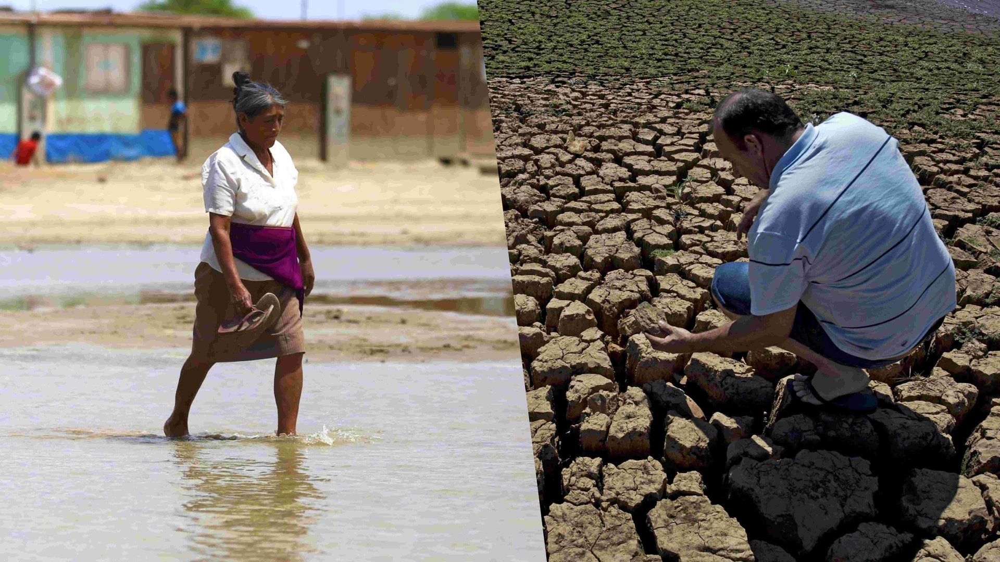
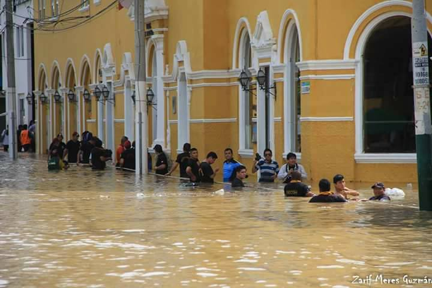
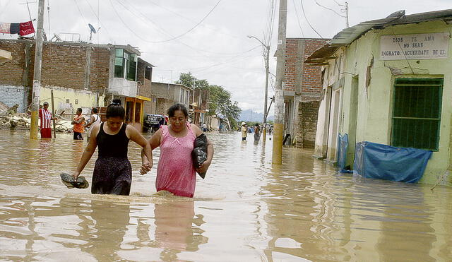
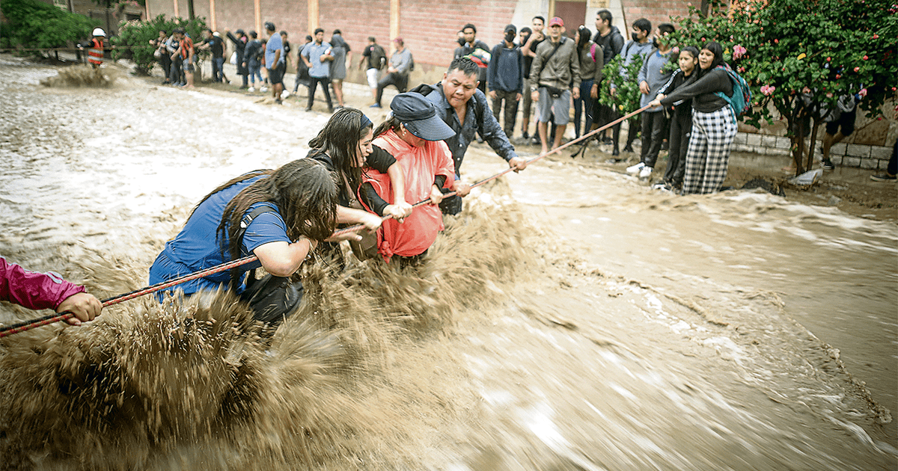
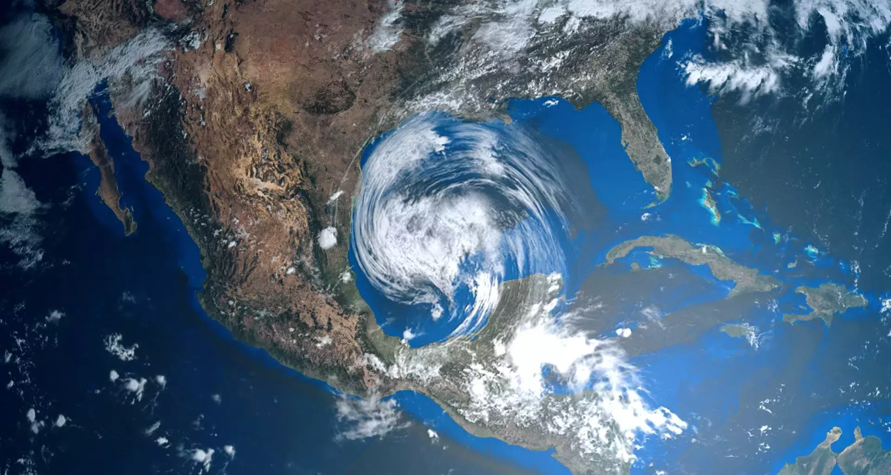
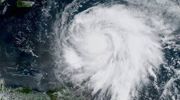
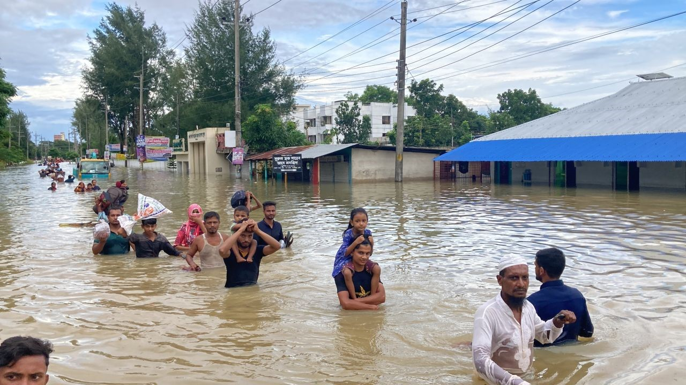
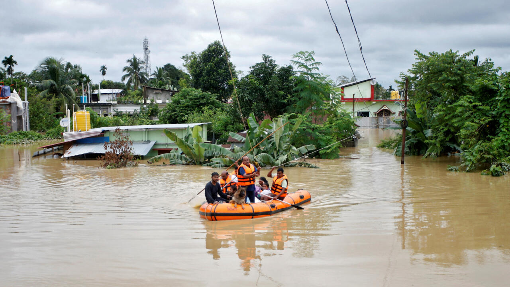

Fenómeno del Niño
Descripción del Fenómeno
El Fenómeno del Niño es un patrón climático que altera las temperaturas de las aguas del océano Pacífico, provocando cambios en el clima mundial. En Perú, este fenómeno genera lluvias intensas, sequías, y alteraciones en la agricultura.

Impacto en Perú
Las zonas más afectadas por el Fenómeno del Niño son las regiones costeras, como Piura y Tumbes. La agricultura, la infraestructura y las poblaciones vulnerables son las más perjudicadas por las lluvias y deslizamientos de tierra.
Tabla de Impactos y Medidas
| Región | Impacto | Imagen |
|---|---|---|
| Piura | Durante los eventos más fuertes del Fenómeno del Niño, la región de Piura ha experimentado un aumento significativo en las precipitaciones, que provocaron inundaciones severas en las principales ciudades como la capital Piura. Esto resultó en la pérdida de cultivos agrícolas, especialmente en el sector de la agricultura de riego, y el colapso de infraestructuras como carreteras y viviendas. |  |
| Tumbes | La región de Tumbes, ubicada en la zona norte de Perú, experimentó fuertes lluvias acompañadas de deslizamientos de tierra debido a la saturación de los suelos. Los desbordes de ríos provocaron daños en las zonas urbanas y rurales, afectando la salud pública debido a la contaminación de fuentes de agua. |  |
| Lima | En la capital peruana, Lima, las lluvias intensas derivadas del Fenómeno del Niño generaron inundaciones urbanas, afectando especialmente las áreas periféricas de la ciudad. Las lluvias provocaron el colapso de sistemas de drenaje, causando serios problemas de tráfico y la interrupción de servicios básicos como el agua potable. |  |
Huracanes
Impacto de los Huracanes
Los huracanes son tormentas intensas que afectan las costas, especialmente en el Caribe y la región del Golfo de México. Estos fenómenos están empeorando con el cambio climático, generando vientos más fuertes y lluvias más intensas.
Tabla de Huracanes y su Impacto
| Huracán | Región Afectada | Descripción | Imagen |
|---|---|---|---|
| Katrina | Estados Unidos (Golfo de México) | Uno de los huracanes más destructivos, causando inundaciones masivas y daños por viento. | |
| Maria | Puerto Rico | Huracán devastador que destruyó gran parte de la infraestructura y dejó miles de damnificados. |  |
Inundaciones
Causas de las Inundaciones
Las inundaciones son provocadas por lluvias excesivas, desbordamientos de ríos, y huracanes. El cambio climático está intensificando estos eventos, especialmente en áreas con infraestructuras vulnerables.

Tabla de Inundaciones y su Impacto
| Región | Impacto | Imagen |
|---|---|---|
| Bangladesh | Inundaciones por monzones, desplazamiento masivo de personas |  |
| India | Inundaciones urbanas por lluvias intensas |  |
Políticas del Gobierno en Zonas de Desastres Naturales
Medidas Preventivas
El gobierno ha implementado políticas de mitigación ante desastres naturales, como la construcción de infraestructuras resilientes y el fortalecimiento de los sistemas de alerta temprana para los ciudadanos.

Tabla de Políticas Gubernamentales
| Política | Descripción | Imagen |
|---|---|---|
| Infraestructura Resiliente | Construcción de edificios resistentes a terremotos y huracanes en zonas vulnerables. |  |
| Sistemas de Alerta Temprana | Creación de plataformas de alerta temprana para desastres naturales, como tsunamis e inundaciones. |  |